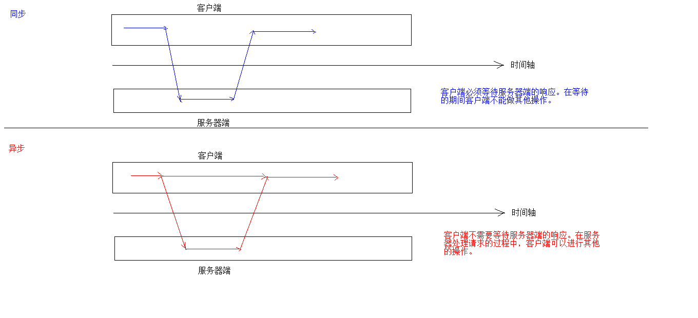

一、AJAX

概念：Asynchronous JavaScript And XML,异步的JavaScript和XML
异步和同步：客户端和服务器端相互通信的基础上
同步：客户端在发送请求后必须等待服务器端的响应，在等待期间不能做其他事情
异步：客户端不必等待服务端的响应，在服务器处理请求的过程中，客户端可以继续进行其他的操作
Ajax是一种无需重新加载整个网页的情况下，能够更新部分网页的技术
通过在后台与服务器进行少量数据交换，Ajax可以使网页实现异步更新。这意味着可以在不重新加载整个网页的情况下，对网页的某部分进行更新
Ajax可以提升用户体验
实现方式：
function fun(){
//1.创建ajax请求对象
var xmlhttp;
if(window.XMLHttpRequest){
xmlhttp = new XMLHttpRequest();
}else if(window.ActiveXObject){
xmlhttp = new XMLHttpRequest();
}
//2.建立连接
xmlhttp.open("GET","ajaxServlet?name=what&age=23",true);
//3.发送请求
xmlhttp.send();
//4.接收并响应响应数据
//readyState=4代表响应已经就绪，准备响应
xmlhttp.onreadystatechange = function(){
if(xmlhttp.readyState == 4 && xmlhttp.status == 200){
var response = xmlhttp.responseText;
alert(response);
}
}
}
function fun(){
$.ajax({
url:"ajaxServlet",
type:"POST",
data:{"name":"what","age":23},
success:function(msg){
alert(msg);
},
error:function () {
alert("请求错误");
},
dataType:"text"
});
}
二、JSON
概念：JavaScript Object Notation JavaScript对象表示法
json现在多用于存储和交换文本信息的语法
进行数据的传输
json比xml更小，更快，更易解析
语法：
基本规则
数据在名称/值对中：json数据是由键值对构成的
键用引号（单双都行）引起来，也可以不使用引号
值的取值类型
数字
字符串
逻辑值
对象
null
数据由逗号分割：多个键值对由逗号分隔
var person = {
"name":"张三",
"age":24,
"gender":"男"
}
var psersons = {
"psersons":[
{"name":"李四","age":25,"gender":"女"},
{"name":"王五","age":26,"gender":"黑色"},
{"name":"赵柳","age":27,"gender":"male"}
]
};
var arr = [
{"name":"李四","age":25,"gender":"女"},
{"name":"王五","age":26,"gender":"黑色"},
{"name":"赵柳","age":27,"gender":"male"}
];
获取数据
json对象.键名
json对象["键名"]
数组对象[索引]
接送数据和java对象的相互转换
JSON解析器：
常见解析器：Jsonlib,Gson,fastjson,jackson
JSON转为Java对象
导入Jackson的相关jar包
创建Jackson核心对象，ObjectMapper
调用ObjectMapper的相关方法进行转换
readValue(json字符串数据,Class)
Java对象转为JSON：
使用步骤
导入jackson相关jar包
创建Jackson核心对象，ObjectMapper
调用ObjectMapper的相关方法进行转换
转换方法：
writeValue(参数1,obj):
参数1
File：将ObjectMapper对象转换为JSON字符串，并保存到指定文件中
Writer：将obj对象转换为 JSON字符串，并将JSON数据填充到字符串中
OutputStream：将obj对象转换为JSON字符串，并将json数据填充到字节输出流中
writeValueAsString(obj):将对象转为json格式的字符串
注解：
@JsonIgnore:排除属性
@JsonFormat:属性值格式化
复杂Java对象转化
List:数组
Map：与对象格式一致
JavaBean对象-->JSON {属性：值，属性，值......}
List/Arrays/Set -->JSON [{属性：值，属性：值}，{属性：值}....]
服务器响应的数据，在客户端使用时，要想当做json数据格式使用。有两种解决方案：
$.get(type):将最后一个参数type指定为"json"
在服务器端设置MIME类型
注意：异步访问的Servlet，Servlet所有响应都会在回调函数的data中体现，即便是跳转页面，那么data会是这个页面的源代码。
一、同步和异步
1.open方法的第二个参数是url，第三个参数可以传入一个布尔值，默认为true，即异步模式
2.主要事件注册时间问题
3.responseXML获取服务端返回的XML数据，以DOM方式操作，但是需要服务端响应的中的Contype-Type 必须是application/xml
4.this.responseText永远获取的是字符串形式的响应体
5.this.reponse获取到的结果会根据this.responseType的变化而变化
二、
1）var xhr = new XMLHttpRequest(); //创建一个XMLHttprequest()
2)xhr.open('GET','./time.php'); //打开与一个地址之间的连接，相当于在地址栏输入地址
3)xhr.send(null); //通过连接发送一次请求，相当于回车或单击访问发送请求
4)xhr.onreadystatechange = function(){ //指定xhr状态变化事件处理函数，相当于处理网页呈现处理后的操作
if(this.readyState ===4){ //通过xhr的readyState判断此次请求的数据是否接收完成
console.log(this.responseText); //通过xhr的responseText获取响应数据
}
}
5)post请求需要设置请求头
xhr.setRequestHeader('Content-type','application/x-www-form-urlencoded');
6)JSON.parse();//将JSON格式的字符串转换为对象
三、进程与线程
1.进程：进行中的程序
2.线程：线程就是拿着剧本（代码）去演戏的演员
3.多线程技术：计算机单核可以同时执行多个事情
四、回调函数
五、跨域
1.同源策略：浏览器指定两个URL地址之间只有域名、协议、端口完全相同才叫同源-----不同源地址之间，默认不能相互发送ajax请求
六、JSONP原理
通过script标签请求一个服务端的PHP文件，这个文件返回的结果是一段js，作用是调用我们事先定义好的一个函数，从而将服务端要给客户端发过去的数据发送给客户端
七、数据格式
1.
八、模板引擎
1.模板的typa = "text/html"
2.id = "resultTemplate"
3.template方法的含义就是将数据和模板结合起来，生成HTML片段